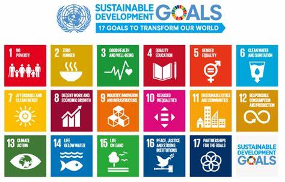

The 3rd Sustainable Development Goal (SDG) established by the United Nations is "Good Health and Well-Being". aims to ensure healthy lives and promote well-being for people of all ages. It focuses on reducing global maternal and child mortality rates, eradicating epidemics like AIDS, tuberculosis, and malaria, and addressing non-communicable diseases such as heart disease and diabetes. Additionally, SDG 3 prioritizes improving mental health, combating substance abuse, and halving deaths and injuries from road traffic accidents. A critical aspect of this goal is achieving universal health coverage, ensuring access to essential medicines, vaccines, and healthcare services, especially in underserved communities.
Significant progress has been made, including improvements in life expectancy, reductions in maternal and child mortality, and advancements in immunization campaigns that have tackled diseases like polio and measles. However, challenges persist. Non-communicable diseases are rising, especially in urban areas, while developing regions, such as sub-Saharan Africa, struggle with inadequate healthcare infrastructure and insufficient funding. The COVID-19 pandemic has further disrupted global health systems, diverting resources and delaying progress in other health initiatives.
Global health disparities remain a major concern, with marginalized communities lacking access to basic healthcare and facing higher rates of disease and mortality. Air and water pollution, insufficient mental health resources, and the growing impact of climate change compound these challenges. Moreover, a global shortage of healthcare workers and unequal distribution of medicines and vaccines exacerbate the situation, particularly in low-income countries. These inequalities hinder the ability to achieve equitable health outcomes worldwide.

To address these challenges, investments in healthcare systems and international collaboration are crucial. Innovative solutions like telemedicine, digital health platforms, and community-based care can bridge gaps in access. Efforts to improve sanitation, combat pollution, and raise awareness about mental health are also vital. Aligning SDG 3 with other goals, such as poverty reduction (SDG 1), clean water and sanitation (SDG 6), and reducing inequalities (SDG 10), can help create a comprehensive framework to ensure health and well-being for all by 2030.